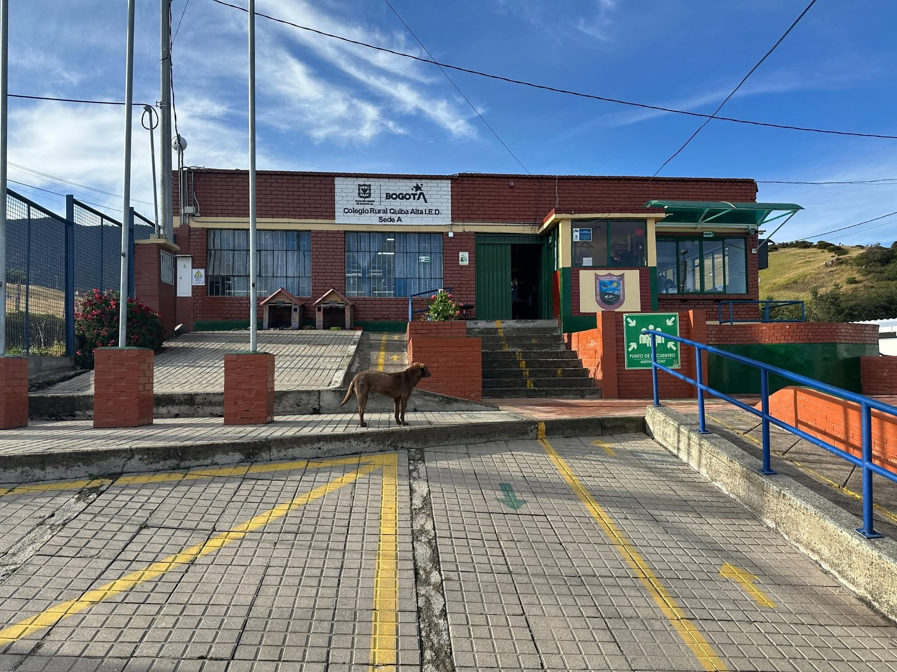

"la basura de muchos es el oro de otros"
El reciclaje como obra de arte,
Si pudieramos demostrar que el resiclaje no solo es separar residuos, sino que tambien puede ser hacer obras de arte con el reciclaje, laforma artistica de demostrar lo que se cree imposible, algo verdaderamente ALCANZABLE en la palma de nuestras manos.
Aqui esta nuestro proyecto escrito en el cual podemos brindar mas a detalle nuestro proyecto y avances.
archivoEste proyecto se hace en base a la problematica que se tiene en el sector de el entorno quibeño y a nivel bogotá. Pero para saber mejor esto, es necesario saber la situacion que tenemos donde se precenta esta problematica
El reciclaje es un metodo que busca mejorar el reducir, reutilizar, teciclar, etc. Para intentar vajar los niveles de contaminacion que hay en el mundo actualmente. este proces, lamentablementente no a sido el mas eficiente en cuanto a produccion y mejora ya este se ve afectado con la sobrepoblación, las compras impulsibas que generan mas desperdicios en la actualida. Especificamente en espacios como entornos hogareños, o escolares que son los entornos donde no se tiene mucho en cuenta estos, y que son los mas perjudiciales para en planeta tierra.
¿Por qué es necesario conocer el problema que estamos enfrentando como comunidad?
En la actualidad, el reciclaje ha tenido avances, pero sigue siendo una práctica poco eficiente debido al crecimiento de la población y al aumento de las compras impulsivas, que generan grandes cantidades de residuos mal gestionados desde los hogares. Esta inadecuada separación de desechos ha provocado graves problemas de contaminación ambiental y afectaciones a la salud humana. Según Flores Huamán y Cubas Rimachi (2023), “la contaminación no solo afecta al planeta, sino que también nos afecta principalmente por enfermedades respiratorias, cardiovasculares e incluso cáncer”, derivadas de la contaminación del aire, tierra, agua y alimentos.
Además, el cambio climático agrava la situación. Sauchay et al. (2022), citados por Flores Huamán & Cubas Rimachi (2023), encontraron que “el aumento de la temperatura ha incrementado las enfermedades respiratorias en un 14% y las cardiovasculares en un 9%”, evidenciando el impacto directo del calentamiento global en la salud. Freire, Meneses y Cuesta (2021), también citados por Flores Huamán & Cubas Rimachi (2023), afirman que “en Latinoamérica mueren alrededor de 7 millones de personas al año por contaminación” y advierten que, para 2050, el deshielo del Ártico causará desastres naturales como inundaciones y tsunamis.
¿Qué ayuda?
El reciclaje es muy necesario ya el con este podemos llevar a cabo una "limpieza". en la que el planeta tierra, no resibe tantos daños que nos pueden perjudicar, actualmente estamos viviendo un fenómeno natural "el fenomeno del niño, el cual esta teniendo muchos afectados a nivel mundial y dejando atras muchas vidas de fauna y flora por sus fuertes sequiar y en especia, el cambio tan grande que hay en el mundo .
situaciones como estas estan sucediendo por parte de nuestra impridencia y desperdicios de recursos que al cabo de un tiempo, para nosotros ya no tiene utilidad y preferimos desecharlo sin saver verdaderamente que es l daño que estamos causando no solo al la sociedad, sino que dañamos el mundo completo, y el futuro de generas proximas, sera totalmente desesperanzador y moribundo por nuestras acciones, siendo un final muy tragico para la humanidad .
para esto podemos empezar a hacer una pequeña solución, haciendo actos de cuidado, como reciclar, reutilizar, reducir, etc., podrian disminuir millones de toneladas de basura dando un futuro esperansador para las futuras generaciones y la sociedad humana. Esta vez nos enfocaremos en el reciclaje, para poder tener un cambio y una repercusion creativa en las persona con las que llevaremos a cavo nuestro taller que motivara a los jovenes a ayuar al medio ambiente y dejar volar su creatividad.
¿Actividades?
Para los niños, la creatividad es el mecanismo que libera su mente y los permite solucionar problemas de formas creativas que nunca se podrian imaginar , por esto, haceremos un taller el cual permita insentivar a las personas para que, reciclen y cuiden el medio ambiente mientras fortalecen su creatividad. Para ello, tragimos diferentes videos que se llevaran a cabo para que los niños interactuen con nosotros y nos cuenten un poco de su experienca reciclando.
Los videos son los siguientes:
Cucharas
Reduce la contaminación, ahorra energía y contribuye al cuidado del medio ambiente.
deja tu huella
hoy el dia de la ciencia, estamos mostrando lo que podemos crear, para ello nos gustaria que pudieras dejar tu calificacion y una forma de demostrar que estuviste con nosotros, por favor escanea el codigo Qr para entrar a esta pagina y escribir tu nombre, si lo haces apareceras en una lista dias posteriores de la feria de la ciencia.
Listado de personas participantes
Legal
La Reciweb es un tema muy importante que se encuentra bajo de las normas de los
siguientes decretos:
Decreto 1381 de 2024: les da a los recicladores de oficio la exclusividad por 15 años
en la parte del aprovechamiento de las basuras. Esto hace parte del plan “Basura Cero”.
Decreto 670 de 2025: busca que se usen menos plásticos de un solo uso y que el país
empiece a trabajar más en economía circular, es decir, reutilizar y reciclar mejor.
Decreto 2192 de 2023: también se enfoca en reducir los plásticos de un solo uso,
sobre todo en lugares naturales y protegidos.
Resolución 2184 de 2019: aunque no es un decreto, es clave porque puso el
código de colores de las bolsas (blanco, negro y verde) para separar los residuos en todo el país.
Además, la Corte Constitucional reconoció a los recicladores como población que debe recibir
apoyo especial, por lo que se les asegura acceso al material reciclable y se crearon las ECAS
(Estaciones de Clasificación y Aprovechamiento)
Uso de páginas web y servicios digitales
decretos que hablan sobre el uso de páginas web y servicios digitales:
Decreto 1413 de 2017: obliga a que las entidades públicas usen servicios digitales como
la carpeta ciudadana o la autenticación en línea.
Decreto 767 de 2022: habla de Gobierno Digital. Lo que busca es que las entidades del
Estado usen mejor la tecnología para trámites, datos abiertos, seguridad y
accesibilidad en sus páginas.
Resolución 1519 de 2020: fija las reglas para que las páginas web de las entidades
tengan accesibilidad, publiquen información clara y manejen datos abiertos.
Resoluciones 2238 y 2239 de 2024: tratan de la política de privacidad y el manejo
de los datos de las personas en las páginas web del Estado.
Decreto 1079 de 2023: regula el servicio de Internet comunitario fijo, dando
reglas sobre calidad y protección para los usuarios.